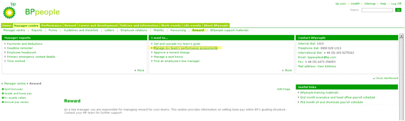

As a ScrumMaster and agile coach my role was to help the two teams find an agile development framework that would fit best for the teams and also promote effective implementation of requirements, higher customer and employee satisfaction and effective demand management.
The challenges the teams were facing were working on many different projects in parallel, very high support work load in addition to new projects, highly specialised skills within the team, high dependencies on external service providers, software quality decrease, to name a few.
After 5 months, the teams had a clear understanding of the processes and roles within the team, the demand management was created in cooperation with the business, there was high transparency on what the team works on, higher team member and customer satisfaction, increased quality and efficiency and even a better work environment.
Client:
Vaillant Group Business Services GmbH
Role:
ScrumMaster
Agile Coach
SAP Help Portal
The SAP Help Portal is SAP's biggest documentation site, a platform to provide access to product documentation as well as related information, such as SAP Notes, product availability information and links to community content.
As a Product Owner I was responsible for transforming a site that merely consisted of a simple web server and more than one hundred million HTML pages into a next generation, cloud based, web application platform, which handled more than 50 million hits per month from over 2 million visitors, and an iPad app as well.
Besides my responsibilities as a Product Owner – such as writing and prioritizing user stories and communicating with the different stakeholders – I was also a key player in guiding the transition from waterfall project management to implementing Scrum.
People@SAP (aka Expert on Demand) replaced the SAP internal global address book to become the first tool in the company that allows people to find others based on their corporate information, contact data, and skills and experience.
As a Product Owner I was responsible for the implementation of a next generation, cloud based web application platform that handles more than 1.5 million hits per month from over 55,000 unique visitors.
Besides my responsibilities as a Product Owner – such as writing and prioritizing user stories and communicating with the different stakeholders – I was also a key player in coaching other teams at SAP IT in implementing Scrum.
Client:
SAP AG
Role:
Product Owner
Agile Scrum Consultant
Customer Influence
The goal of the project was to replace an out-of-date, at-risk, vulnerable platform with a new solution, based on BrightIdea software. The solution gives SAP customers and partners the opportunity to participate closely with SAP development teams on products and solutions.
As a project manager, I was responsible for a smooth project implementation regarding all tasks done by the SAP IT team, for example, the migration of the existing content or operational responsibilities.
Implementation of performance management based on SAP ECC EHP4 and SAP NetWeaver Portal 7.0 EHP1.
Supporting upgrade activities from SAP NetWeaver Portal 7.0 SPS 17 to SAP NetWeaver Portal 7.0 EHP1.
Performing hands-on activities for the configuration of the performance management iViews, including any fine-tuning required (in conjunction with the BASIS and the BP portal teams).
Performing testing and transporting the performance management objects and components.
Client:
BP International PLC
Role:
SAP NetWeaver Portal Consultant

Go-Live Support for BP Employee Portal
Managing and carrying out technical build activities to support the functional and content management requirements as defined in the programme.
Performing hands-on activities for the configuration and development of BP specific portal components, including any fine-tuning required (in conjunction with the BASIS and the BP portal teams).
Performing testing of all functional components and determining missing content based on the programme requirement.
Reviewing all technical documentation on any build, development, or transport activities as defined by the programme.
Client:
BP International PLC
Role:
SAP NetWeaver Portal Consultant
Consulting on SAP NetWeaver Portal 7.0 topics
Hands-on workshop on the topics: SAP TREX 7.0/7.1 administration, performance tuning, SAP Portal fundamentals, SAP AS Java administration, SAP NetWeaver Portal system administration.
Creation of an operation management manual for TREX (start/stop, tracing/logging, backup, etc.)
TREX troubleshooting of an E-Recruiting 6.0 implementation.
Client:
Bausparkasse Schwäbisch Hall AG
Role:
SAP NetWeaver Portal Consultant
Project Lead of the ECM@SAP Workstream
Project management of parallel projects: KM Enhancements, Unified Publishing Platform (between KM and legacy DM system) and Metadata Harmonization.
Assisting in the creation of the business blueprint and creation of the technical blueprint.
Conceptual design and implementation of project requirements (Mass KM Upload, Web 2.0 KM Rating, KM Repository Manager for UPP, Metadata Harmonization Tools, etc.).
Architectural Design of ECM landscape integrating RedDot CMS and Live Server solution and the Web Page Composer (WPC)
Client:
SAP Americas Inc.
Role:
Project Manager
SAP NetWeaver Portal Consultant
SAP Business ByDesign Business Center
Assisting with the creation of the business blueprint and creation of the technical blueprint.
Conceptual design for implementing a community platform covering topics like governance, user interface design and security etc.
Integration of Web 2.0 collaboration tools like forum system (JIVE), Wiki System (Confluence), Blog System (Confluence), Visual Targeted Matchmaking (Leverage Software) into SAP NetWeaver Portal 7.0.
Coordination of implementation with SAP KM development and SAP SDN team.